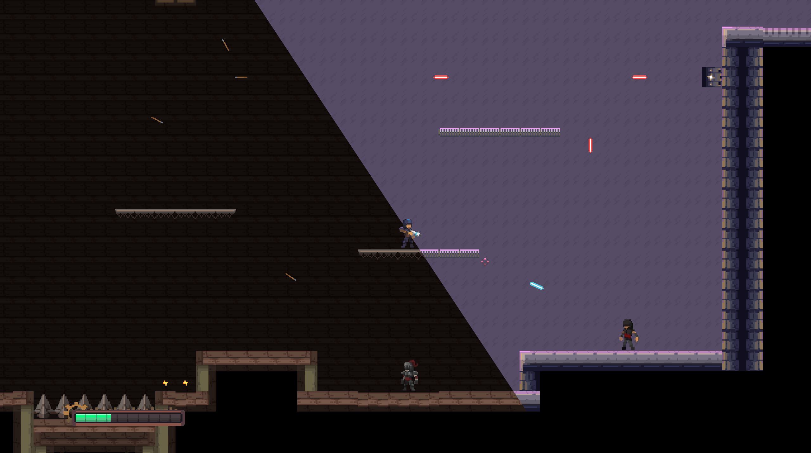
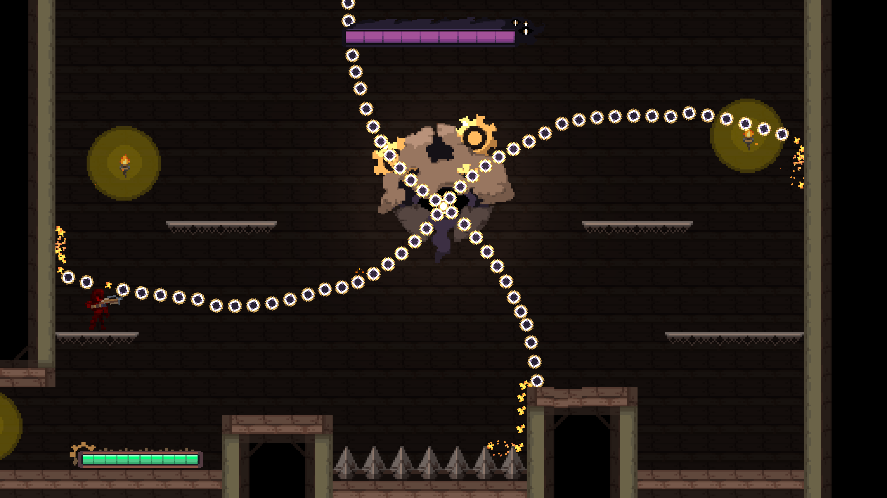
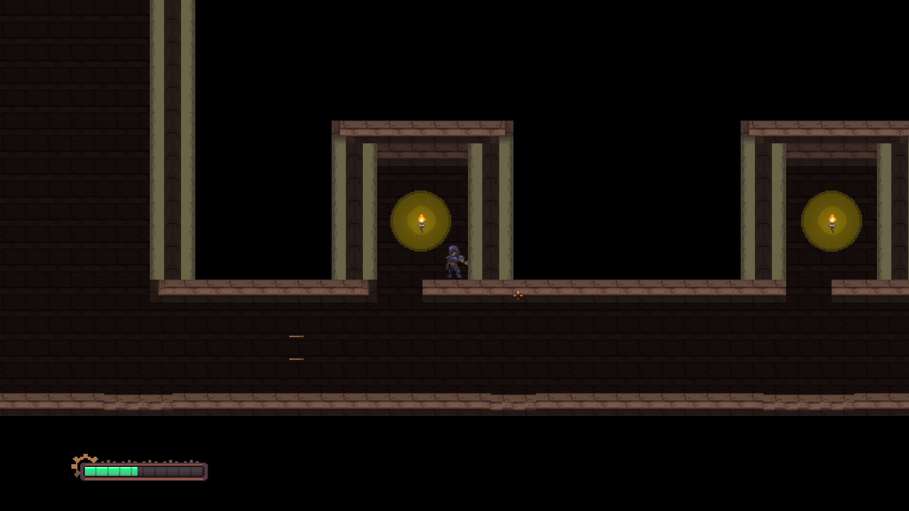
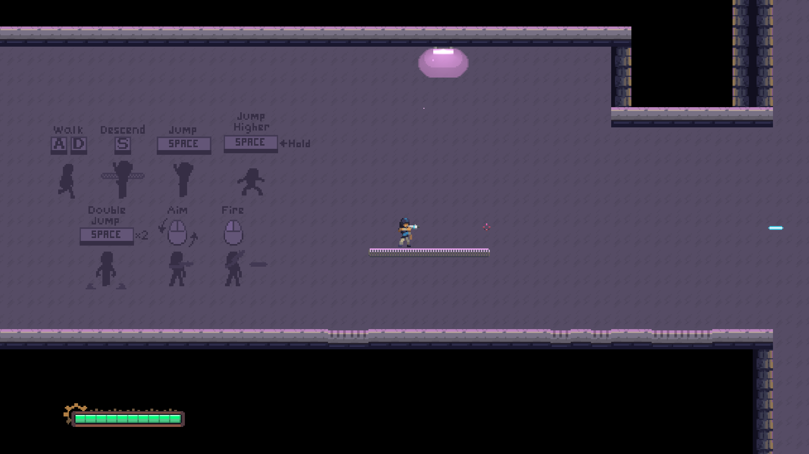
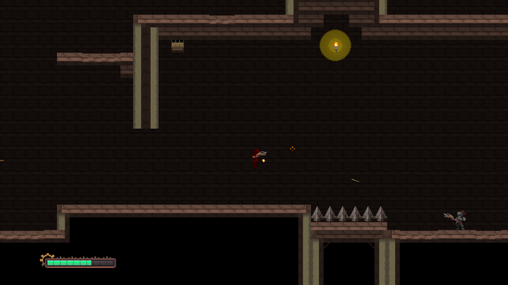

TimeChained
TimeChained is a 2D game, made in Unity for the Beginner's Jam Summer 2025. We worked on this game with 3 programmers, 1 artist, and 1 sound designer. TimeChained takes light inspiration from some roguelikes, featuring a level with traps and enemies. After fighting their way through this level, players face a bullet-hell-style boss fight. Created fully from scratch in a week, TimeChained placed 23 out of 123 games that were submitted to the jam!
Personal Contribution
Technologies Used
Unity 6000.1 with C#
Visual Studio as IDE
Github for version control and collaboration